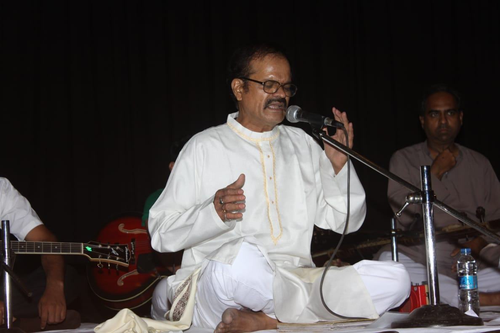
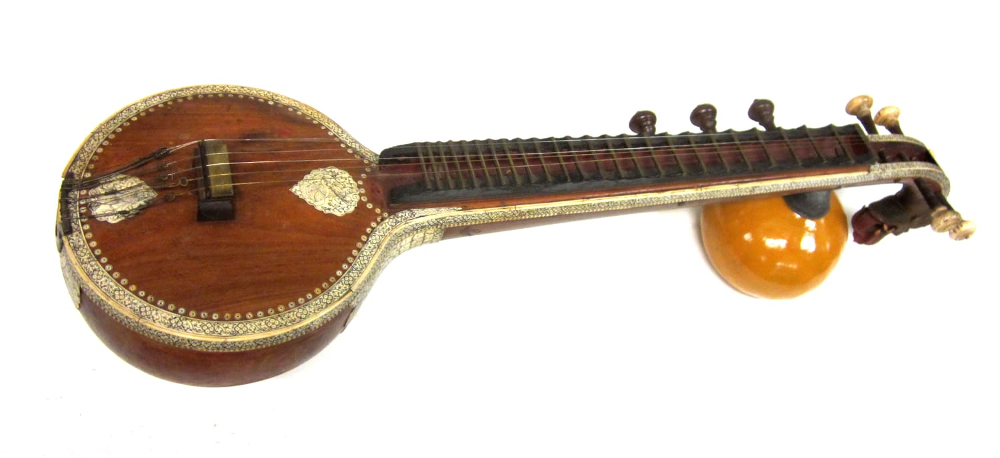

Two ways into the same tradition.
Learn to sing, or learn to play the veena. Both begin with the ear and both are taught step by step, from first lessons to advanced study.

Carnatic Vocal
The voice is the oldest instrument in Carnatic music, and every other instrument imitates it. This course builds a steady voice first, then the songs and raga sense to use it.
What students learn
- Voice culture and holding shruti
- Sarali varisai and alankaras
- Geethams, varnams and kritis
- Raga identification and alapana
- Tala, kept with the hands
- Sahitya: clear diction and meaning
Basic to advanced progression
- Foundation
Sound and steadiness
Sarali varisai, janta and alankaras. Pitch, breath and simple talas become secure.
- Intermediate
Songs and ragas
Geethams, varnams and early kritis, with the gamakas that give each raga its shape.
- Advanced
Improvisation
Alapana, neraval and kalpanaswara, with the repertoire to support them.
Practice
Short daily practice of the basics, plus one piece to polish each week. Lessons can be recorded for home revision where the teacher agrees.
Performance
Students are prepared for informal recitals when the teacher judges them ready. Performance is encouraged, never forced.

Veena
The veena is the instrument most closely linked to Saraswati and to the voice. Its long sustained notes and gamakas make it one of the most expressive ways to learn Carnatic music.
The instrument and how we teach it
The Saraswati veena has frets, main strings and rhythm strings, and is played seated on the floor. Students first learn posture, how to hold the instrument, and a clean pluck. Every phrase is sung before it is played, so the hands follow the ear.
Basic to advanced progression
- Foundation
Posture and plucking
Holding the veena, tuning, fingering, and sarali varisai in a steady tone.
- Intermediate
Gamakas and repertoire
Alankaras, geethams and varnams, with the gamakas that give each raga its character.
- Advanced
Kritis and manodharma
Kritis, raga elaboration and playing alongside a vocalist.
Practice
Regular short sessions protect the hands and build a steady sound. Students learn to tune and look after the instrument. Please ask us about instruments when you enquire.
Performance
Students may play at academy recitals and, in time, accompany vocalists, once the teacher feels they are ready.
Which course is right for you?
Neither is better. Choose the one you are drawn to, or ask us to help you decide.
| Feature | Carnatic Vocal | Veena |
|---|---|---|
| You play | Your own voice | A fretted string instrument |
| You begin with | Shruti, sarali varisai and voice culture | Posture, plucking and sarali varisai |
| A good fit if | You love to sing, or want the lyrics and their meaning | You enjoy instruments and the sound of sustained gamakas |
| You need | Nothing but a willing voice and a quiet place to practise | An instrument. Ask us about options when you enquire |
| Performance | Recitals; singing with accompanists | Recitals; playing with vocalists |
How classes are arranged
Details are settled with you at enquiry, so that the arrangement fits the student.
Weekly lessons
Lessons are weekly and graded by level. Each student is given a short task to practise between classes.
Small batches
Students are grouped by level so that every voice and every pair of hands can be corrected.
Studio and online
Ask us whether a studio or an online arrangement is available for the course and level you want.
Tell us which course interests you.
Send an enquiry and we will reply with current batches, timings and fees. You can also contact the academy directly.